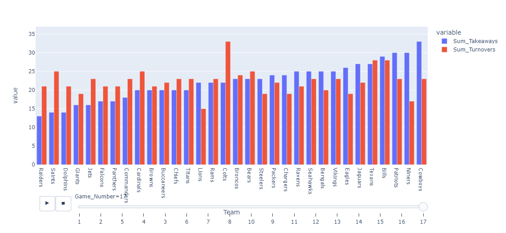

Looking at data from the 2022 NFL Season, we also found statistics that were not as indicative of success as one might think. Two statistics that we deemed were not as indicative of success than many believe were rushing yards and turnovers/takeaways. We will dive deeper into our findings below.
Looking at out data here, you can see that this is not much of a difference in total rushing yards between the four best teams and the four worst teams. At the end of the 17 games season, the difference in total rushing yards for teams is not far off from each other. In fact, in the case of the Bears (the worst team) they had the most rushing yards of any team that is looked at here. int
To further emphasize our point that rushing yards aren't as indicative of winning as you might think, let's look at the rushing yards per game for the team with the best record in the 2022 season, the Chiefs, and the Bears. As you can see, the Bears had more rushing yards in 10 games despite winning only 3 games and the Chiefs winning 14.
As one may think from watching NFL games, people may think that turning the ball over to the other team more than your opponent will lead to winning games, but we found that this is not totally true. Teams that had success making it to the playoffs that had more turnovers than takeaways include the Dolphins, Giants, Chiefs, and more. Even teams that had a smaller difference between turnovers and takeaways that had a worse overall performance than those three teams include the Texans, Bears and Broncos.
